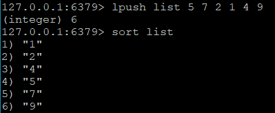
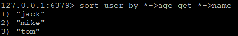

在有的业务系统中，redis用来做缓存，在有的系统中，redis用来做数据库，另一些系统可能作为队列使用（当然还有其他N中用法），以上这些功能都在基本的数据类型的基础上，由各种命令组合而成。
事务
只要做过系统开发，难免跟数据库打交道，常用的数据库有mysql，sqlserver，oracle和posgresql，这些都是关系型数据库，如今越来越多的非关系型数据库已经崭露头角，redis就是其中之一，基于内存使得它有很高的性能。
数据库的一大特性就是支持事务（有的数据库还不支持），当然redis也是支持的。redis中的事务是一组命令的集合，在同一个事务中的命令，要么都执行，要么都不执行，事务的应用最经典的场景就是银行转账，转账过程大概如下图
- ATM将A的钱从银行账户中转出
- ATM将A的钱转入B的银行账户
操作是分两步进行的，如果执行了1，在执行2时失败了，假如没有事务的控制，那么A的银行账户扣款了，而B的银行账户却没有入账，钱消失了。因此步骤1和步骤2要么都执行成功，要么都执行失败。
redis的事务是声明在同一个事务下，将一组命令发送给redis，然后再让redis执行这组命令，以上转账场景用redis实现如下：
1 | set accountA 1000 -- 初始化A账户余额 |
执行结果：
multi、exec命令
从multi命令开始，redis返回OK，进入事务，后面的两个命令decrby和incrby并没有立即返回结果，而是返回queued，表示这两条命令已经进入等待执行的事务队列中。在执行exec命令后，redis将等待执行的事务队列中的所有命令（状态为queued的命令）按照发送顺序依次执行，最终的返回值就是每条命令执行后返回值组成的列表。在发送exec命令之前，如果连接的客户端断开，redis会清空当前客户端的事务队列，待执行的命令都不执行，在发送exec命令之后，返回结果之前，连接的客户端断开，redis会继续执行已在事务队列的命令。
事务的另一个功能可以保证命令的连续性，在没有事务的前提下，如果A客户端发送命令时，B客户端也在发送命令，无法保证A发出的命令连续执行，中间有可能被B发出的命令插入执行，开启事务可以杜绝这种情况发生。
事务异常
如果在事务执行时某个命令执行出错，redis将如何处理？首先要知道哪几种情况会导致命令执行出错
语法错误。如果输入的命令不存在或者命令的参数个数不对，比如：
第一条命令是正确的，成功加入事务队列，第二条命令少了参数，第三个命令不存在，执行
exec后直接返回错误，连语法正确的命令都没有执行。运行时错误。运行时错误指在命令执行时出现错误，比如使用散列类型的命令操作集合类型的key，这种错误在事务开启时，redis无法发现，会作为正常的命令放入事务队列中，比如：

执行exec后，第二条命令返回了错误，但是第一条和第三条命令依然执行了，redis没有关系数据库事务提供的回滚功能，因此必须由开发人员在执行出错之后处理。
这两种会导致事务执行失败的错误，其中语法错误完全可以在开发时找出并解决，另外如果能够对key定制合理的命名规范，也可以有效的避免运行时错误
watch、unwatch命令
多客户端连接的情况下，有可能对同一个key执行操作，因此可能出现竞争，有些情况下需要先获得一条命令的执行结果，然后再根据这个结果执行下一条命令，在竞争的情况下，A客户端执行后，B客户端又修改了A执行后的结果，随后A客户端执行命令得到的结果可能是错误的。要解决这个问题，能不能使用事务来处理？答案是不行，因为事务的执行结果要么全都执行，要么全都不执行，结果也是一起返回的，无法将前一条命令的结果作为下一条命令的参数。换个思路，在上一条命令执行结束后，要保证这个key的值不被其他客户端或其他命令修改，直到所有命令执行完后才允许其他客户端修改，事务的watch命令就派上用场。
用watch命令监视key后，事务执行前修改了key的值，最后事务中的incr命令并没有执行，exec返回空结果。执行exec命令后，不论事务是否被成功执行，都会取消对key的监视。如果在执行事务前取消对key的监视，可以使用unwatch命令。
过期时间
实际的开发中会遇到一些有时效的数据，比如缓存，过了一定时间就要删除这些数据，在关系数据库中需要一个字段记录到期时间，然后定期轮询删除过期数据，redis的做法更简洁，设置key的时候可以同时设置过期时间，到时redis会自动将key删除。expire命令的用法为expire key seconds，其中seconds表示key的过期时间，单位是秒。在秒杀的场景中，限流的一种简单思路就是限制用户的访问，用户的id作为key，限制用户30秒内只能进行一次秒杀（真实的场景比这个更复杂）。
过期后自动删除了key，返回nil，也可以用set key value ex second 或 set key value px millisecond 命令来设置key和过期时间，前者的时间单位是秒，后者是毫秒。这两个操作都是原子的。如果想知道key的有效时间还剩多久，可以使用ttl命令，返回key的剩余时间（秒）
如果key没有设置过期时间，即key是永久有效的，ttl将返回-1，如果key不存在,ttl将返回-2。
既然有设置过期时间的命令，那有没有取消过期时间的命令？肯定的，redis提供了persist命令清除过期时间，用过orm框架的应该很熟悉，persist就是持久的意思。
除persist命令外，使用set或 getset命令设置key也会清除过期时间，其他只对value的操作，不会影响key的过期时间。
expire的命令的seconds参数必须是整数，所以最小时间是1秒，如果要更精确到毫秒，要使用pexpire命令，除了单位是毫秒以外，其他功能与expire一致。另外还有两个命令也是可以设置过期时间：expireat和pexpireat，区别在于这两个命令的时间参数分别使用unix时间戳的秒和毫秒作为单位。
至此，设置过期时间的五个命令如下
expire key seconds 设置单位为秒的过期时间
pexpire key milliseconds 设置单位为毫秒的过期时间
set key value ex seconds 设置单位为秒的过期时间
set key value px milliseconds 设置单位为毫秒的过期时间
expireat key timestamp 设置unix时间戳过期时间，单位秒
pexpireat key milliseconds-timestamp 设置unix时间戳过期时间，单位毫秒
注意：如果使用watch监视具有过期时间的key，当key过期被删除后，watch命令不会认为该key被修改过。
过期时间的应用场景很多，最常用的是缓存，为了提高网站的负载能力，要将一些访问频率高且访问耗时的数据结果缓存起来，让一段时间内的访问请求从缓存获取结果，同时希望这些缓存在一定时间之后过期删除。如果大量的使用缓存且过期时间设置过长就会导致redis占用大量的内存，另一方面如果为了防止内存占用过大而将过期时间设置的太短，可能导致缓存命中率过低而消耗CPU或IO资源。因此要不断的尝试，设置一个合理的过期时间，内存的利用率提高的同时，也节约CPU和IO的资源。在redis的配置文件中可以修改maxmemory参数，限制最大可用内存，当超过了最大内存时，redis会根据maxmemory-policy参数指定的淘汰机制删除key保证占用内存小于maxmemory，maxmemory-policy支持的机制如下
| 规则 | 说明 |
|---|---|
| volatile-lru | 只对设置了过期时间的key使用lru算法，删除一个key（默认规则） |
| allkeys-lru | 对所有key使用lru算法，删除一个key |
| volatile-random | 随机删除一个即将过期的key |
| allkeys-random | 随机删除一个key |
| volatile-ttl | 删除过期时间最近的一个key |
| noeviction | 永不过期，返回错误 |
排序
需要排序的情况，可以使用有序集合实现，常见的场景是大数据排序，例如销量排行榜，一般只要求获取Top10或Top100之内的少量数据，不会将所有数据进行排序。除了有序集合外，如果要对列表、集合进行排序，可以使用sort命令来实现。
对列表排序：

对集合的排序：
注意：如果用smembers命令查看集合元素，不排序的情况下也是有序的，这是因为对于整数，redis做了优化，后续再分析。
对有序集合的排序，忽略元素的score，按照value排序:
以上都是对数字的情况下进行排序，sort命令也可以排序非数字元素，不带参数直接排序会报错，增加 alpha参数后，sort命令尝试将非数字元素转换为double来比较，默认按照字典顺序升序排列：
可以通过增加参数 desc使结果按照降序排列，如果要分页显示，还可以通过limit offset count参数返回指定范围的结果（是不是有点像sql？）
在列表或集合中，key一般用来存储id，而单纯的对id的排序意义不大，更多时候我们需要根据具体的某个属性来排序，比如用户按照年龄排序，这时需要多个数据类型整合排序
排序的结果是按照年龄的大小升序排列，by后面的参数为参考键，参考键支持字符串key或散列中的某个field（key->field表示），如果提供了by参数，sort会根据by后的参数替换通配符*，获取值后根据该值进行排序。如果by后的参考键不包含通配符*，redis不执行排序操作。
上面的场景最终排序后获取的是用户id，实际上还不够，更直观的是能直接把用户的姓名或者其他信息展示出来，这时候就要借助get参数，它的规则和by参数一样，也支持字符串key或散列中的某个field，并使用*作为通配符。现在，要实现排序后返回用户姓名，可以这样写

与by参数不同的是，sort命令中只允许一个by参数，而get参数却允许多个，所以还可以这么用
可见有几个get参数，每个元素返回的结果就有几个，如果还要返回用户id，使用get即可，该命令会返回元素本身的值。
默认情况下，排序后的结果会直接返回，但是在实际的场景中，短时间内连续查询，每次都进行排序，而结果没有变化，过于消耗性能，这时候可以把结果缓存起来，store参数可以起到缓存结果的作用。将上述排序的结果缓存到result中
保存的结果为列表类型，如果缓存的key已经存在，将会覆盖，加上store参数后，命令的返回值为结果个数。
sort命令的时间复杂度为O(n+mlog(m))，其中n表示要排序的列表（集合或有序集合）中的元素个数，m表示要返回的元素个数（如果有limit offset count参数，根据count个数返回），n越大，性能越低，在排序的过程中会创建一个临时的容器来存储待排序的元素，因此使用sort命令要注意以下几点：
- 待排序的元素尽可能的少
- 使用limit参数控制返回的元素个数
- 如果访问频率高，排序耗时，尽可能使用store缓存排序的结果